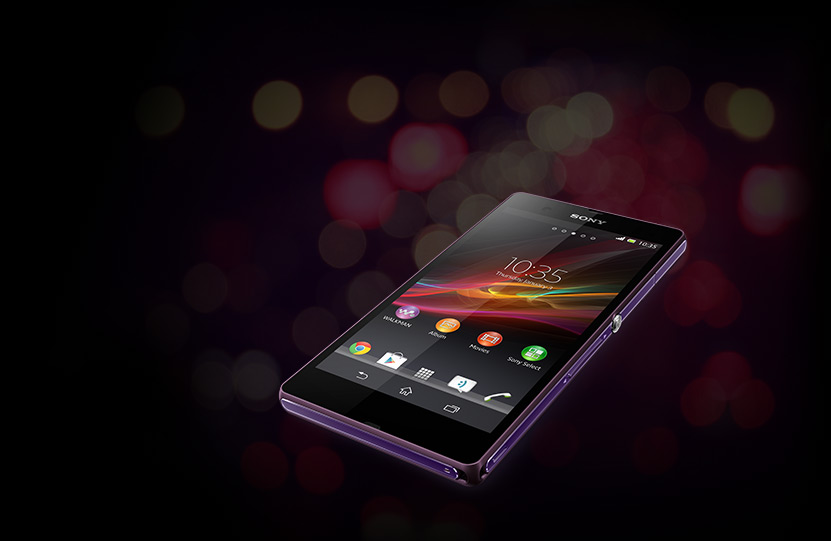
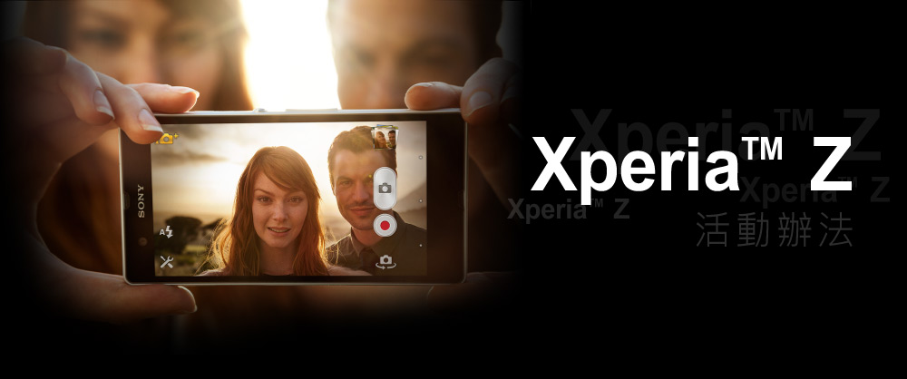

活動期間
自2013年03月04日00:00起~自2013年04月XX日23:59止
得獎公布時間
2013年04月XX日
活動辦法
參加獎 │ 活動期間內至本網站參加活動，並成功將活動照片發布至個人Facebook塗鴉牆，即可獲得抽獎資格。
BEST WISH獎 │ 在活動網站上累積票數最多前100名參加者，即可獲得抽獎資格。
（網站票數加分說明：系統將會每天定時抓取分享至Facebook的圖片之集讚數替你的網站作品總票數進行加分動作，1個讚= 1票）
加油獎 │ 幫你的好友投票以及在FB上按讚，即可獲得抽獎資格。
( 網站投票限制:一組Facebook帳號只能在一天內針對不同作品進行投票／ Facebook按讚限制:遵循Facebook既定規則 )
活動贈品
Xperia™ Z一支 / 每個獎項（贈品以實物為準）
活動方式
- 本活動僅限台、澎、金、馬的消費者參與，活動對象為活動期間參與活動，且填寫正確資料與將活動照片發布至個人Facebook塗鴉牆者之消費者。
- 當您完成線上活動流程後，若因個人因素(如：資料填寫不全、填寫錯誤、填寫不實…等)無法通知您得獎訊息時，視為自願放棄本活動得獎資格。
- 若您未於指定時間內完成領獎手續，Sony Mobile將視同您放棄得獎資格，原獎項不再重抽及遞補。請您務必於指定時間內完成領獎，避免喪失您的權益。
- 本活動獎項不得因為任何理由要求兌換現金或更換其他獎品。
- 依中華民國稅法規定，當中獎人為中華民國境內居住之個人，中獎獎項價值超過新台幣20,000元，需自行負擔贈品價值之10%稅金。當得獎人為非中華民國境內居住之個人，需行負擔贈品價值之20%稅金。另，主辦單位對同一納稅義務人全年給付金額在新台幣1,000以上未達新台幣20,000者，依稅法規定須開立扣繳憑單列單申報該主管稽徵機關，獎項價值將併入當年度個人綜合所得稅申報，但免預繳付稅額。
活動條款
- 參與本活動者保證所有填寫、提出之資料均為真實且正確，如有不實或不正確之情事，將被取消預購資格，且如有致生損害於主辦單位或其他任何第三人，應負一切民刑事責任。主辦單位對於任何不實或不正確之資料不負任何法律責任。
- Sony Mobile有權使用活動參與者所留下的個人資料，做為日後Sony Mobile於銷售或行銷相關活動使用，為了維護消費者隱私權益，本公司將依法善盡保密義務，絕不會販賣或透露登錄資料給預購店點、合作夥伴以外的第三者。
- 「活動條款」載明在本活動網頁中，參與本活動者於寄出資料參加本活動之同時，即同意受本「活動條款」之規範，如有違反本「活動條款」，Sony Mobile有權取消其活動資格，並對於任何破壞本活動之行為保留法律追訴權。
- 本活動因故無法進行時，Sony Mobile有權決定取消、終止、修改或暫停本活動。
- 在參加活動過程中，Sony Mobile對於使用者產生的任何成本及花費，例如註冊費及ISP連線費等，將沒有任何義務及責任。
- 對於透過任何不當程式進行大量資料發送者，Sony Mobile將保留取消其參加資格的權利。
- Sony Mobile保留對活動網站、活動規則等的修改權利，修改後不另行通知，不願遵守活動規定者將不具參加資格。
- 其他未盡事宜，悉依民事法律相關規定辦理。